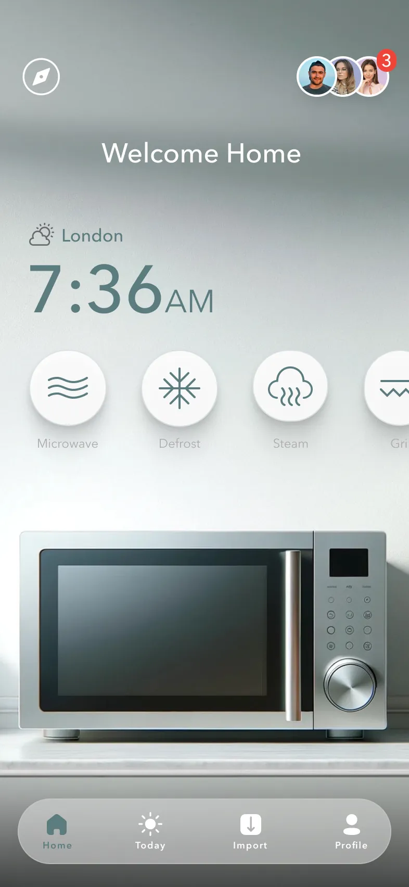
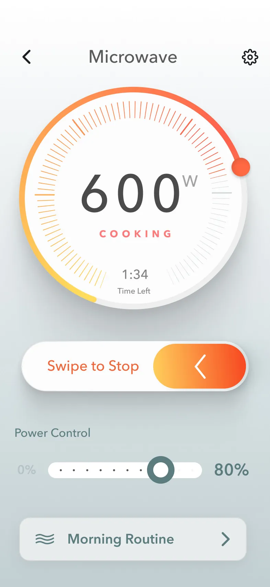
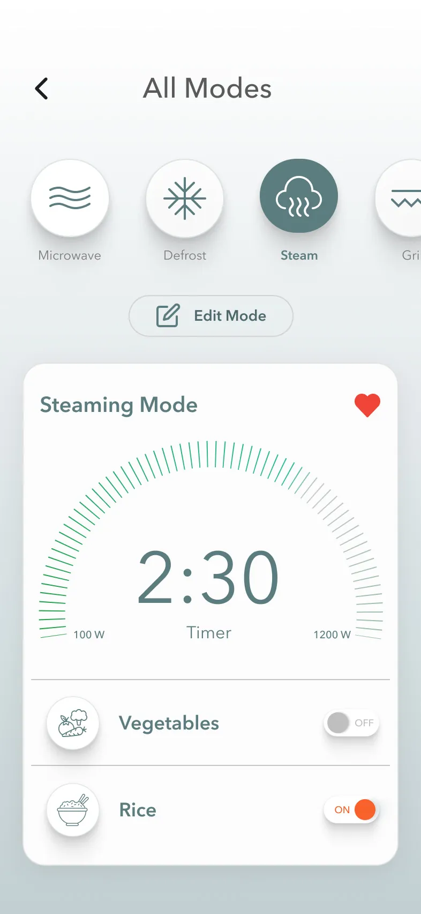
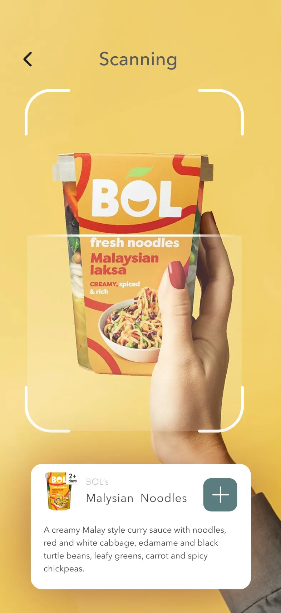
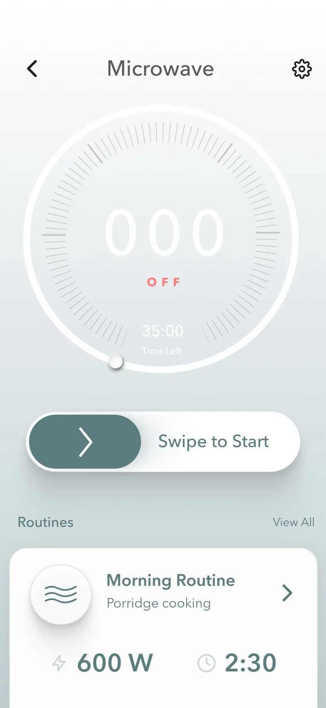
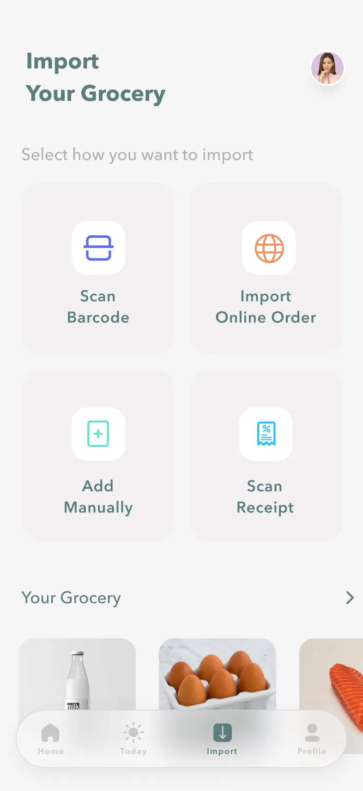
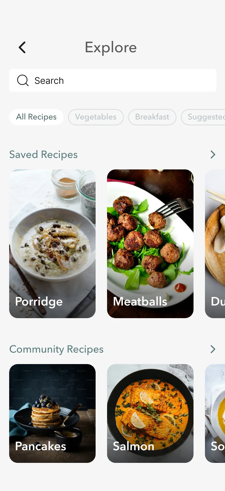
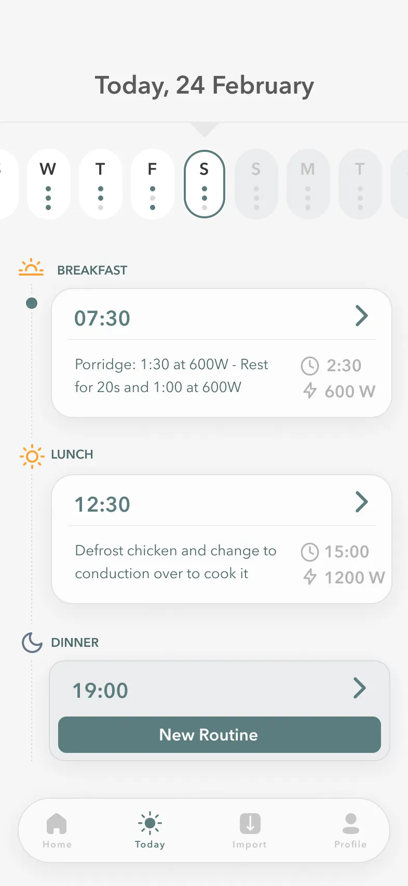
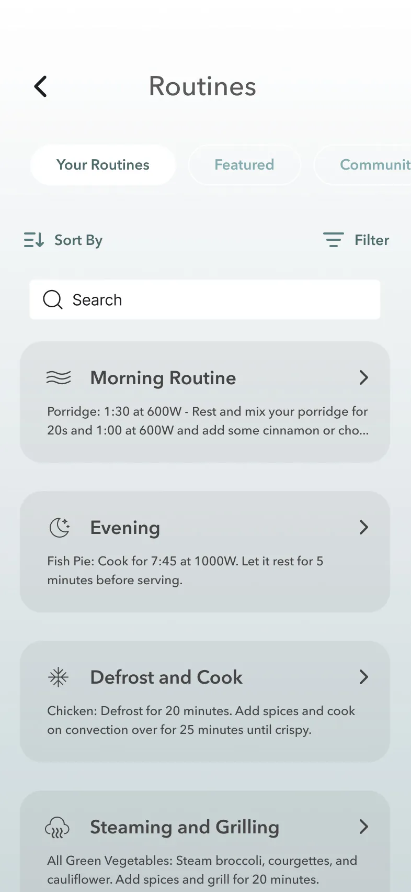
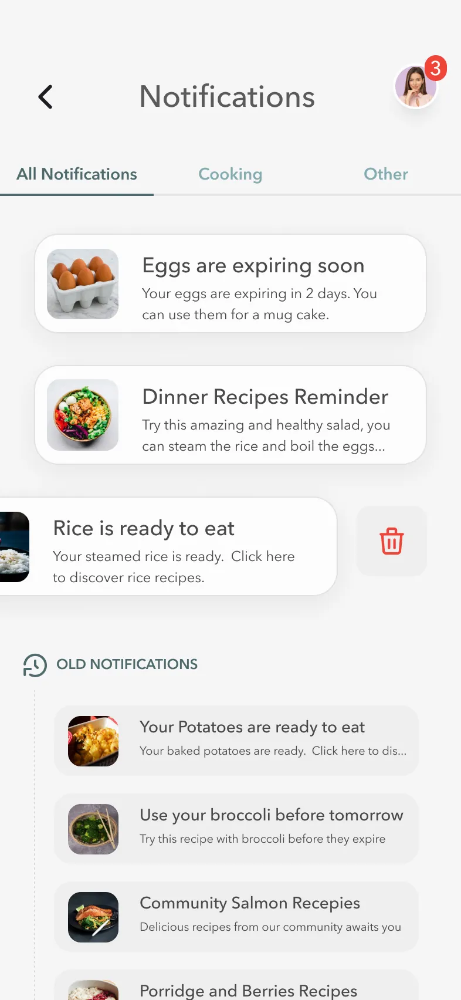

Today, convenience and health-conscious living are more important than ever. With this in mind, I designed an application for a smart microwave that aims to not only simplify the microwave's functionality but also encourage healthier eating habits.
The goal of this project was to create an intuitive interface that seamlessly integrates with the user's grocery shopping and personal calendar, making meal planning and preparation more efficient.




My Role
As the lead UI/UX designer, I followed a structured and comprehensive design process. Beginning with market research and competitor analysis, I explored industry trends, customer needs, and existing products to identify opportunities for improvement.
User research allowed me to gather critical insights into potential pain points and feature desires, which informed the subsequent feature prioritisation.
I developed sketches and wireframes to create initial visual representations and guide user flows, ensuring intuitive navigation.
Throughout, I analysed research outcomes and refined the app’s interface, culminating in high-fidelity designs that aligned with the project’s goals of improving usability and promoting healthier eating habits.
Problem
Before starting with any aspect of the design, it was crucial to comprehend the current usage patterns and needs of users in their home kitchens, particularly considering the increased reliance on home appliances due to changes in lifestyle and work conditions.
A key focus was understanding how home cooking habits have evolved, especially with more people spending time at home, either due to remote working or lifestyle changes. This includes examining how users interact with their microwaves, and identifying potential gaps or frustrations in their current experiences.
The aim was to ensure that the app addresses these evolving needs effectively, enhancing convenience, efficiency, and enjoyment in home cooking.

User Research
In the User Research phase, I adopted a comprehensive approach to gain a deeper understanding of user needs and behaviours.
Initially, I engaged in conversations with potential users to gather firsthand insights. These discussions were pivotal in revealing how individuals interact with their microwaves in their daily routines.
I delved into the specifics of their usage patterns, such as: Frequency of use Types of food they commonly prepare Overall satisfaction with the current functionalities I asked specific questions that aimed to identify one key function or feature they wished their microwave possessed but currently lacked.
This inquiry aimed to pinpoint innovative opportunities that could redefine the microwave user experience, focusing on practical improvements and enhancements that could bridge the gap between existing capabilities and user aspirations.


User Problems
- Limited Cooking Automation and Personalisation: Existing microwaves often lack advanced automation features for routine tasks and personalisation options.
- Inadequate Integration with Smart Home Systems: Many current microwaves do not integrate seamlessly with smart home systems.
- Lack of easy to use Interface and Accessibility: Current models frequently have non user-friendly interfaces or accessibility issues for users with visual impairments.
- Insufficient Cooking Assistance and Guidance: Lack of cooking support, such as not having access to a variety of recipes, community suggestions.
- Inefficiency in Cooking Automation: Lack of support for remote operations or cooking automation. Users cannot start their microwave from a distance, like from their office, or set it to automatically prepare meals at a scheduled time.
Possible Solutions
Custom Cooking Modes
Create and save custom cooking modes for favourite dishes
Cooking Habits and Automate Cooking
The app can learn user habits, like making porridge every morning, and automate these tasks
Saved and Favourite Recipes
Store and quickly access favourite recipes
Remote Control and Monitoring
Remotely turn on the microwave, including all settings
Temperature Monitoring
Display current temperature and allow setting target temperatures
Cooking Notifications
Send alerts when cooking is complete or requires attention
Calendar Integration
Suggest new recipes or when to use ingredients before they expire, integrated with the user's calendar
Routine Editor
Create and manage cooking routines and automate cooking
Personalisation and Family Use
Set and save presets for different family members



Project Takeaways
A deep understanding of user needs is essential for user-centric design, highlighting significant opportunities for innovation in areas like automation, recipe integration, and smart home connectivity. The critical importance of a user-friendly interface, as demonstrated by features such as the secure swipe gesture, is essential for seamlessly integrating a product like a microwave oven with a digital experience.
However, there are still a lot of inputs & features that could be added with proper testing and identifying the problem with the help of real-time user data.